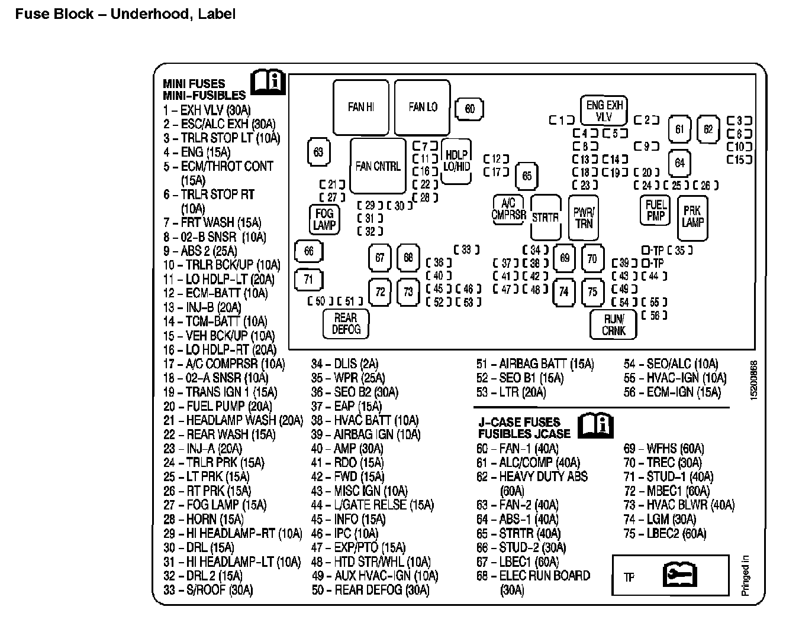

Operation CHARM
: Car repair manuals for everyone.
Home
>>
Cadillac
>>
2007
>>
Escalade ESV AWD V8-6.2L
>>
Repair and Diagnosis
>>
Relays and Modules
>>
Relays and Modules - Lighting and Horns
>>
High Beam Relay
>>
Locations
High Beam Relay: Locations
Fuse Block - Underhood, Label:
